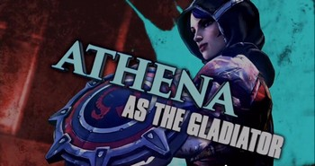
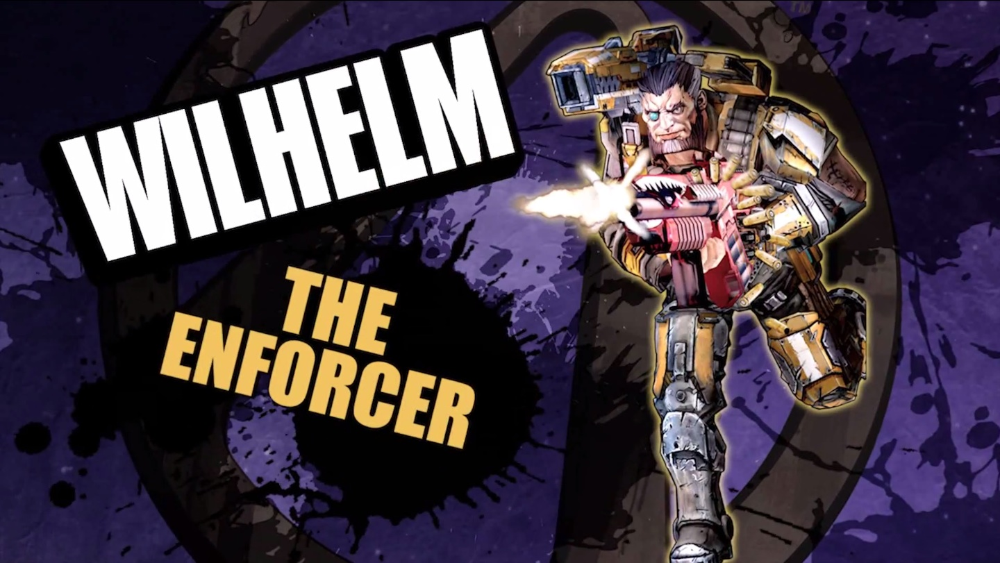
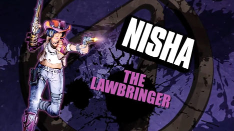
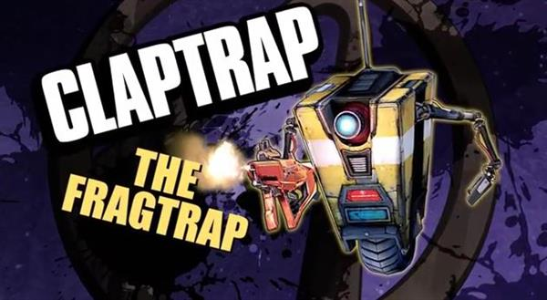
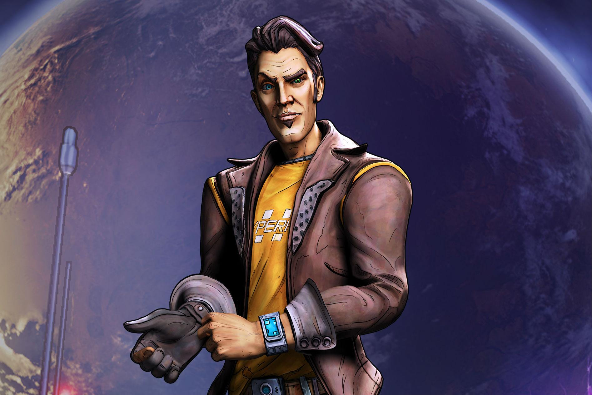

Playable Characters
In Borderlands the Pre-Sequel you have four basic playable characters and one extra DLC character to pick from. Athena the Gladiator, Wilhelm the Enforcer, Nisha the Lawbringer and Claptrap the Fr4g Trap are the base classes. Jack the Doppelganger is the DLC class. Any class can use any weapon in the game, but they each have their own special skills and abilities that favor certain weapon types over others. Each class is heavily customizable while still retaining their core gameplay patterns.
Gladiator
Athena is a highly defensive class based around the use of her active ability, Kinetic Aspis. Kinetic Aspis is a shield that blocks enemy projectiles. It collects the damage from the projectiles, which can then be thrown back at the enemy. Her first talent tree focuses on increasing her ability to duel and block damage with Kinetic Aspis. Her second tree focuses on melee combat, increasing her survivability and damage in melee combat. Her third tree revolves around empowering her elemental damage.
Enforcer
Wilhelm is a minion mancer unit. His active ability, Wolf ans Saint, summons two drones to aid him in combat. Wolf will attack enemies while Saint hangs back out of battle, healing Wilhelm. Wolf can be destroyed in combat while Saint cannot. Wilhelms first talent tree increases his proficiency with elemental weapons while increasing the duration of Wolf and Saint. His second tree focuses on damage and empowering Wolf. His third tree focuses on survivability and empowering Saint.
Lawbringer
Nisha is a run and gun character. Favoring weapons with high fire rates, Nisha's active ability Showdown gives her auto aim while increasing Gun Damage, Accuracy, Fire Rate, Reload Speed, and Bullet Speed. Her first talent tree is based on a stack system called Order, that heals her for killing enemies and dealing damage. It also increases her survivability. Her second tree is highly mobile, heavily based around Showdown and makes best use of a pistol. Her third tree focuses on damage outside of Showdown.
Fr4g Trap
Claptrap is a very adaptive fighter. His active ability, VaultHunter.EXE allows him to survey a combat situation and then gain appropriate skills and fighting style to combat it. His first talent tree is focused on explosive damage. his second talent tree is a support tree, providing bonuses for healing other players and supporting them through his skills. His third tree is stack based. It allows Claptrap to use a "Subroutine" until his stacks run out, at which point another is chosen and the stacks refresh. This matches his adaptable playstyle with VaultHunter.EXE quick well.
Doppelganger
Jack is also a minion mancer unit, but not to the same degree as Wilhelm. His active ability, Expendable Assets, summons two Digi-Jacks that fire at the enemy with their wrist-mounted shock blasters. They are immobile and will lose health at a constant rate if Jack moves too far away. If one is destroyed during the ability's duration, another is created next to Jack's current location. Jack's first talent tree focuses on damage and survivability for himself and the Digi-Jacks. His second skill tree is based around Digi-Jacks and even fellow team mates dying in battle while you avoid damage yourself. His third tree is focused on increasing his own damage and is also stack based.